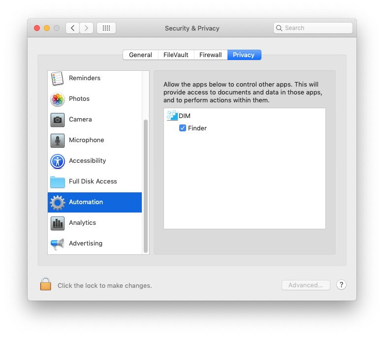

Miscellaneous
1) Requirements
DIM is written in Swift 4.2 with Xcode 10.1. It was compiled to support macOS 10.10 (Yosemite) through macOS 10.15 (Catalina). I only have 10.13 (High Sierra) and 10.14 (Mojave) to check. Earlier versions of macOS (10.4 through 10.13) can use DIM 2.1.0.
2) Known Problems/Bugs
Multiple monitors are technically not supported. However, my own use (along with 100s of users) show no problems if both monitors’ arrangements are not changed between the “Memorize Icon Positions” and “Restore Icon Positions”. The worst case scenario here is that some icons may be placed outside of either monitors’ viewing area. If this is the case, click anywhere on the Desktop and then in the Finder’s View menu, simply select Clean Up and all the icons will reappear, most likely in places you don’t like, but at least you can rearrange them.
3) Tricks
After the first time use, specifying DIM as a Login Item will adjust the icons positions after the Finder starts up (make sure to check “Automatically Restore Icon Positions at start up” and/or check “and then Quit” for this behavior).
DIM uses its own preference file (stored in ~/Library/Containers/com.parker9.DIM-4) so previous versions of DIM will still work and different users can use the same application for their own Desktop and Finder windows.
If "Memorize icon Postions" is checked and "at Quit" is selected then quiting, log off, restart and shutdown all trigger a memorization.
4) FAQ
DIM doesn’t seem to be working correctly, what’s going on? Strange, it’s been working fine for me and many others. First, you are running macOS 10.10 or later? If not, go find DIM 2.1.0, that should work for you (unless you're really old school and are running System 7.5-9, then you need DIM 1.3.1). Next, with DIM not running, try deleting the folder ~/Library/Containers/com.parker9.DIM-4/ (the “~” means your home directory, you’ll probably need to use Finder’s Go>Go to Folder… to get there). Later versions of macOS seem to take awhile to clear out. Give the Mac a few minutes (go do something else for awhile) and then try DIM again. If that doesn’t work, try downloading a fresh copy of DIM. If still not working, perhaps macOS has decided not to allow DIM to talk to the Finder. Go to System Preferences…>Security & Privacy and select the Privacy tab and scroll down on the left to “Automation”, it should have an entry for DIM on the right that looks something like  
If DIM is not listed, then macOS has decided that DIM can not talk to the Finder. Unfortunately, the only way I know how to fix this is by going into Terminal (Applications/Utilities) and type “tccutil reset AppleEvents” (without the quotes) and hit enter. Running DIM now should pop up an macOS alert and make sure you say “OK”. If it’s still not working, you can drop me an email at DIM@parker9.com with as much detail as you can about the problem, including the macOS version you are using.
DIM just beeps when I try to Restore/Memorize a Finder window! DIM records the POSIX path that a Finder window is showing. The beep indicates that path doesn't exist anymore. This is usually because the path has changed. You will need to save a new Icon Arrangement for the new path.
When Desktop Icons are Hidden, I can't drag anything to the Desktop! That's right, you can't. When "Hide Desktop Icons" is selected in the Action menu, DIM places a window (with the picture of the Desktop without the icons) just over the Desktop itself. Therefore, drag and drop is not to the Desktop but to a picture of the Desktop. You can still get to the Desktop by opening a Finder Window or through the command line. To restore drag and drop to Desktop, you need to "Unhide Desktop Icons" for the Action menu.
Any particular Icon Arrangement corresponds to what? Any Icon Arrangement refers to either the Desktop or a Finder Window. You can determine if the Icon Arrangement is for the Desktop or Finder window by inspecting the "Number of current ..." or "Number of memorized ..." lines: the word "Desktop" will appear for Desktop, otherwise "window" will appear for a Finder window. If the Icon Arrangement is for a Finder window, by pressing "Restore Icon Positions", a Finder window will either appear or be updated to show which folder this Icon Arrangement belongs to. A beep would signal that the folder no longer exists.
DIM doesn't seem to memorize icon positions at Quit/every ...? DIM needs to be running for "Memorize Icon Positions" checkbox to work. This option simply tells macOS to call DIM at the time interval (or "at Quit"). If DIM is not running, it never receives the notification from macOS. You can just leave DIM open, minimized or hidden for this option to work.
I want to uninstall DIM, what do I do? Uninstalling DIM is done by simply dragging DIM to the Trash. DIM also created a folder in your home directory at ~/Library/Containers/com.parker9.DIM-4 which you can either delete or leave.
Hey, I want to send you money for such a cool thing, how can I do that? Really? I’m sure my wife (and kids) would like that, but it’s not required. If you really do, on the upper right corner, hit the red “Donate?”. Thanks in advance!
5) Files in the distribution
This distribution zip should contain the DIM application and a folder called “xcode files.zip”. The latter is simply all the source files to recompile DIM. It's completely unnecessary, it's only there for the 'nerd' aspect (and for full disclosure on what DIM actually does). In principle, you can compile your own version of DIM using these files.
6) Warning/Disclaimer/Licenses
Using this application won’t make you more attractive or get you rich. It may even do something horrible to your Mac, though I definitely hope not. Regardless, I haven’t tried to make it completely robust with all possible things that can go wrong. So, for instance, if you run out of storage space while it’s running, I don’t have a clue what it will do. Hopefully just complain and quit. I do know nothing in this application itself will hurt your Mac, but as you know- garbage in is garbage out.
I wrote this for my personal use. I find it useful. I also know 100s (if not 1000s) have also found it useful. It’s free and you can give the distribution (i.e. as you got it) to anyone you want. You can’t sell it, though. And if you modify the script and don’t give me credit for the original, you’re simply evil.
G.J. Parker - http://www.parker9.com (Entonos)